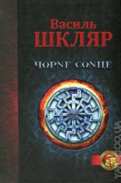
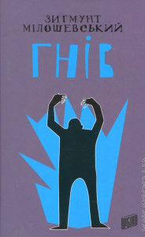

Задолго до того как началась история Америки Сингер, другая девушка пришла во дворец, чтобы принять участие в борьбе за руку другого принца… Это рассказ об Отборе с точки зрения королевы Эмберли, матери принца Максона, рассказ о том, как познакомились родители Максона и как обыкновенная девушка стала всеми любимой королевой.
Пока Америка решает, кого она в действительности любит – принца Максона или Аспена, ее подруга Марли точно знает, кому отдала свое сердце, и платит за это высокую цену. Марли вспоминает, как тот роковой день, когда все во дворце отмечали Хеллоуин, навсегда изменил жизнь не только ее и Картера, но и принца Максона.

Російсько-українська війна очима бійця полку "Азов".
Хто і навіщо затягує криваву драму? Чому гинуть найкращі? Чому місцеві вважають своїх визволителів ворогами? Яким наш герой бачить майбутнє Вітчизни? Глибока, сповнена смутку, болю й надії оповідь хлопця, якого честь і сумління змусили взяти до рук зброю.
До видання ввійшли твори "Чорне Сонце", "Танець під чортову дудку", "Крук - птаха нетутешня", "Останній шанс Захара Скоробагатька", "Високі гори у Ялті", "Цілком таємні історії".

25 листопада 2013 року прокурора Теодора Шацького викликають до зруйнованого бункеру біля довоєнної німецької лікарні в Ольштині. Під час дорожніх робіт там знайдено старий скелет. Шацький упевнений, що йдеться про останки часів війни й дає розпорядження передати знахідку медичному факультету університету, де постійно бракує наочних приладь. Він навіть не припускає, що цей начебто кінець звичайної процедури виявиться початком одного з найскладніших розслідувань у його прокурорській кар’єрі... Найскладнішого й останнього.
Роман найпопулярнішого сучасного польського письменника Зигмунта Мілошевського, що завершує трилогію із прокурором Теодором Шацьким, протягом року було продано понад 200 000 примірників. «Гнів» очолив список бестселерів у Польщі за 2014 рік.